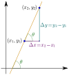

slope

Definition: In mathematics, the slope or gradient of a line is a number that describes both the direction and the steepness of the line. Slope is often denoted by the letter m; there is no clear answer to the question why the letter m is used for slope, but its earliest use in English appears in O'Brien (1844) who wrote the equation of a straight line as "y = mx + b" and it can also be found in Todhunter (1888) who wrote it as "y = mx + c".Slope is calculated by finding the ratio of the "vertical change" to the "horizontal change" between (any) two distinct points on a line. Sometimes the ratio is expressed as a quotient ("rise over run"), giving the same number for every two distinct points on the same line. A line that is decreasing has a negative "rise". The line may be practical – as set by a road surveyor, or in a diagram that models a road or a roof either as a description or as a plan.
Source: Wikipedia
Wikipedia Page
Wikidata Page